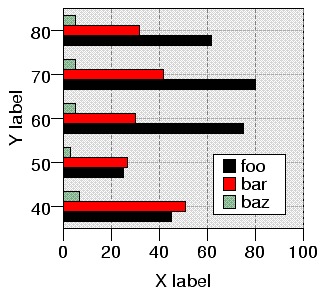

| PyChart |
| PyChart |

The below program generates this chart.
../demos/bartestv.py
from pychart import * theme.get_options() data = [(10, 20, 30, 5), (20, 65, 33, 5), (30, 55, 30, 5), (40, 45, 51, 7), (50, 25, 27, 3), (60, 75, 30, 5), (70, 80, 42, 5), (80, 62, 32, 5), (90, 42, 39, 5), (100, 32, 39, 4)] # The attribute y_coord=... tells that the Y axis values # should be taken from samples. # In this example, Y values will be [40,50,60,70,80]. ar = area.T(y_coord = category_coord.T(data[3:8], 0), x_grid_style=line_style.gray50_dash1, x_grid_interval=20, x_range = (0,100), x_axis=axis.X(label="X label"), y_axis=axis.Y(label="Y label"), bg_style = fill_style.gray90, border_line_style = line_style.default, legend = legend.T(loc=(80,10))) # Below call sets the default attributes for all bar plots. chart_object.set_defaults(bar_plot.T, direction="horizontal", data=data) # Attribute cluster=(0,3) tells that you are going to draw three bar # plots side by side. The plot labeled "foo" will the leftmost (i.e., # 0th out of 3). Attribute hcol tells the column from which to # retrive sample values from. It defaults to one. ar.add_plot(bar_plot.T(label="foo", cluster=(0,3))) ar.add_plot(bar_plot.T(label="bar", hcol=2, cluster=(1,3))) ar.add_plot(bar_plot.T(label="baz", hcol=3, cluster=(2,3))) ar.draw()
| PyChart |